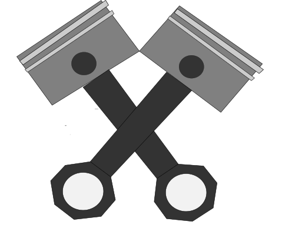
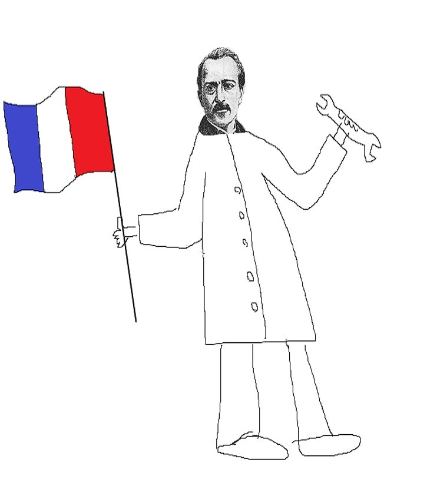

MOTORJI Z NOTRANJIM ZGOREVANJEM
Po veliko ne povsem uspešnih poskusih drugih inženirjev je Jean Joseph Etienne Lenoir izdelal prvi komercialno uspešni motorz notranjim zgorevanjem. Motor je bil precej ogromen ampak ne zelo močan, saj kočije, ki jih je poganjal, niso presegle 10km/h. Sledil je počasen a vztrajen napredek inženirjev. Nemec Niklaus Otto je izdelal prvi 4-taktni motor leta 1861. Prvi dvotaktni motor je izdelal leta 1879 Nemec Karl Benz in ga tudi patentiral.
[1]